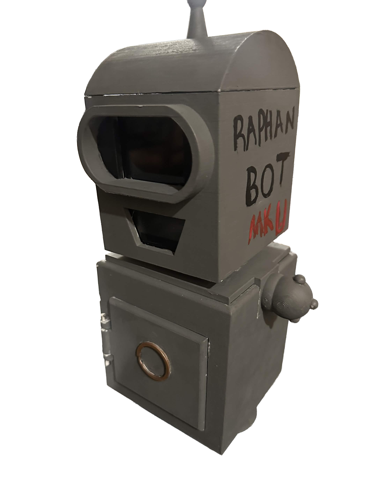
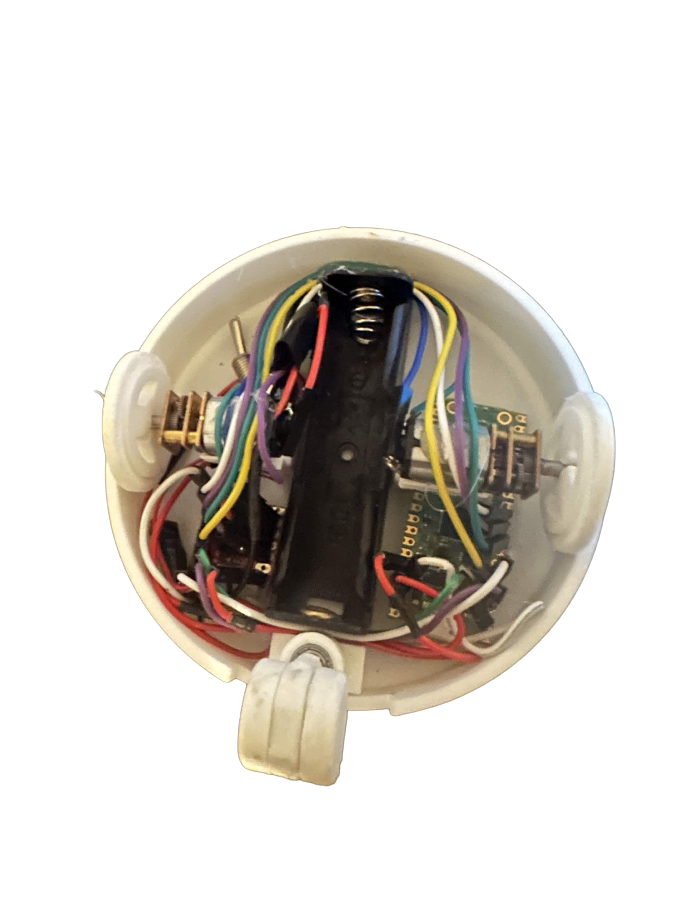

Surfboard Propulsion System
Short description of the project, the engineering problem, and the final result.
Read MorePortfolio
I'm a mechanical engineer with a passion for developing robotic systems, prototyping new ideas, and turning concepts into functional hardware.
Featured Work

Short description of the project, the engineering problem, and the final result.
Read More

Mechanism design and iterative prototyping for a compact targeting platform.
Read More


Embedded controls, sensing, and mechanical integration for a playful automation build.
Read More
Prototype development, fabrication, and validation for a custom motion-driven device.
Read MoreOverview: A compact propulsion concept designed to explore efficient motion for a surfboard-based platform.
Tools Used: SolidWorks, Arduino, prototyping tools, and basic fabrication methods.
Process: The design focused on balancing compact packaging, mechanical reliability, and testable performance.
Result: The project produced a practical proof-of-concept that highlighted key design tradeoffs for future iterations.
Overview: A mechanical system built to support alignment and targeting through controlled motion.
Tools Used: CAD modeling, 3D printing, analysis tools, and iterative prototyping.
Process: The work emphasized mechanism layout, structural stability, and refinement based on testing feedback.
Result: The final build improved repeatability and demonstrated the value of rapid iteration.
Overview: An automation platform that combines motion, sensing, and physical interaction in a compact form.
Tools Used: Microcontrollers, sensors, CAD, and assembly tools.
Process: The project integrated electronics and hardware while refining the motion logic through testing.
Result: The completed robot delivered a reliable, repeatable experience and helped sharpen mechatronics skills.
Overview: A hands-on build focused on translating a creative concept into a working prototype.
Tools Used: Fabrication tools, rapid prototyping, and performance testing.
Process: The workflow emphasized design validation, adjustment, and practical manufacturing decisions.
Result: The prototype evolved into a functional, testable demonstration of engineering problem-solving.